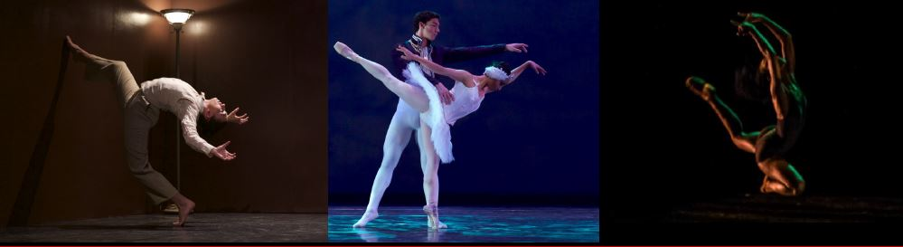

I realized my top 3 choices for my career are becoming a lawyer, marriage counselor or dance teacher.
I decided my top 3 colleges are Spelman, UCLA and Georgia Institute of Technology.
It costs 53,179 dollars to attend Spelman.
It costs 33,391 to go to UCLA.
It costs 29,370 to go to Georgia Tech.
I need to work on my patience and not getting distracted as easily because it could hinder my progress.
I have great social and problem solving skills which will help me in my career.
I would like a BMW i8 which costs 163,300 a month but I am considering walking for free.
I found that I need a master's degree and a bachelor's degree to be employed in the careers I am interested in.
I learned it is better to begin as an assistant to a lawyer before rising up to be a full lawyer.